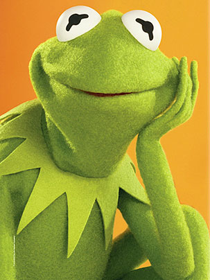

De: La Frikipedia, la enciclopedia extremadamente seria.
De: La Frikipedia, la enciclopedia extremadamente seria. De: La Frikipedia, la enciclopedia extremadamente seria.

|
Este artículo necesita ser ilustrado. Busca una afoto en nuestro depósito de imágenes o donde sea y ponla, pero que no sea pr0n, que se cabrea el señor del adSense y nos corta el grifo de los dólare. Y sin dólare no hay servidor... |
Paco Pico o tambien conocido como el pajaro loco (A no que ese es otro ¬¬) es el mayor violador de Barrio Sésamo.Una vez este pajaro violó a todos los personajes de Bario Sésamo en 2 minutos y medio.Su madre era una prostituta iraqui (De ay el nombre)y su padre era Calimero.Paco Pico tiene diversos amigos como Epi (Al cual fusilaron por vender droga a menores de edad en concreto a nños de 3 meses) Y Blas (Al cual le dieron una paliza unos canis que pasaban por su portal).Paco se mudo de Barrio Sésamo a Elm Street donde aparecio muerto a los tres dias por el traficante de niños Freedy Kruger.
La infancia de Paco Pico estuvo influenciada por sus amigos los teleñecos los cuales le echaron de su serie por violar a la rana gustavo.Luego intento entrar en Los Simpson finiendo ser la mscota (Ya que era amarilla) pero le acabaron echando antes de estrenar la serie.Paco Pico se busco la vida como Boy,Stripper,Travelo,Traficante hasta que al final encontro su verdadera vocacion Inmigrante ilegal.Esta profesion le llevo hasta Barrio Sésamo tmabien conocida como Sesamo Street en el famoso videojuego Grand Thef Auto Epi&Blas Stories.Pacollego a barrio Sésamo con 19 años pero no fue aceptado en la serie hasta los 19 y medio.Con el dinero que gano paco se lo gasto en cervezas y loterias donde gano 100.000 $ pero justo despues fue atropellado por un coche de terroristas rusos y Paco fue enviado al hospital "El milagro fallido".Alli descubrio el Karma (Esto es que cuando haces una cosa mala te pasa luego una buena o viceversa creo)Alli Paco se dedico hacer una lista de sus malas acciones y pronto protagonizo su propia serie titulada "Me llamo Paco".
Aqui una lista de los empleos de Paco:
 Bueno pues ya esta.
Paco Pico murió en la silla elèctrica,por intentar violar al perro de Jet Lee,aunqué en realidad,murió en la silla eléctrica que Jet lee guardaba en su sótano.
Autor(es):